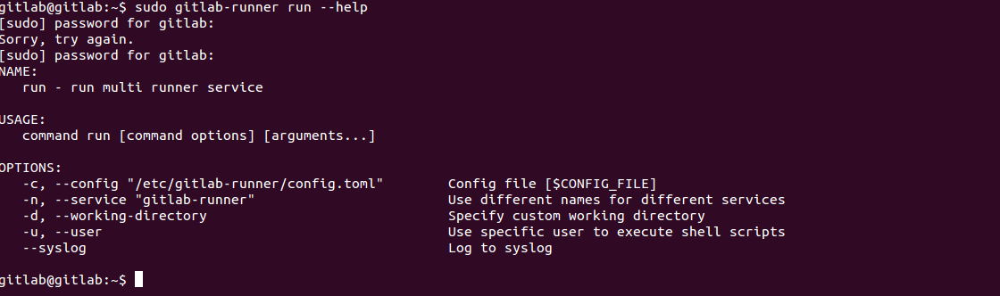
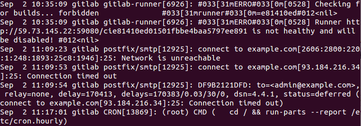
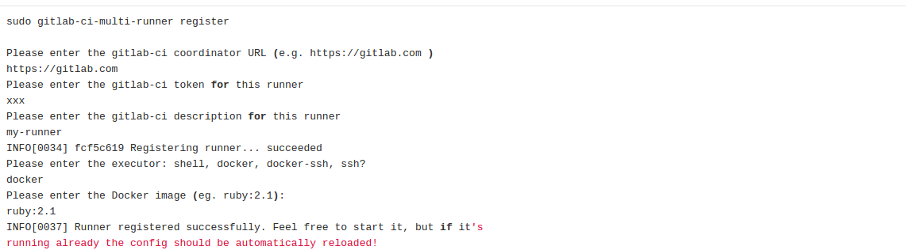
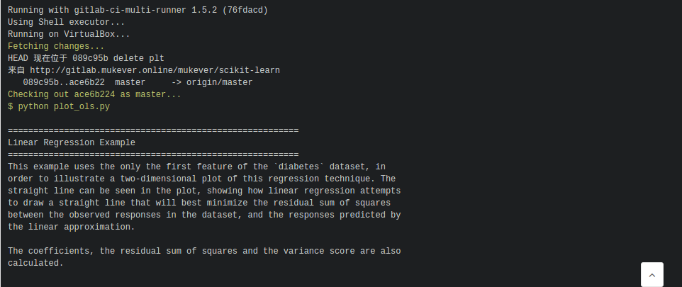

在Gitlab代码托管和自动化CI部分中使用docker能完成c++代码的编译运行，当我运行
python ****.py总是提示我没有安装numpy模块，其实我是安装的了。
使用
sudo gitlab-runner run --help
发现gitlab-runner的编译log可以添加到系统的log
cat /var/log/syslog
可惜没什么用，突然想到在选择executor
sudo gitlab-runner register
可以选择shell。
当我再次运行下面命令时,就可以运行了。
sudo gitlab-runner run